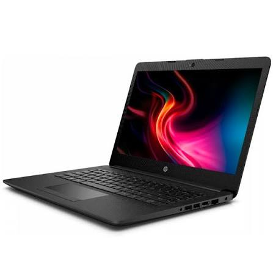

Las laptops son computadoras portátiles que permiten realizar diferentes actividades como estudiar, trabajar, navegar por Internet, ver contenido multimedia y utilizar diferentes programas. Una de sus principales ventajas es que pueden transportarse fácilmente de un lugar a otro.
En nuestra tienda encontrarás laptops para diferentes necesidades y presupuestos. Contamos con equipos ideales para estudiantes y trabajadores, así como laptops de mayor rendimiento para videojuegos, diseño y otras actividades exigentes.

Son laptops pensadas para estudiantes y para realizar actividades como tareas, trabajos, investigaciones y clases virtuales.
Son equipos adecuados para realizar trabajos de oficina, reuniones virtuales, navegación por Internet y diferentes tareas profesionales.
Son laptops diseñadas especialmente para videojuegos. Cuentan con un buen rendimiento y permiten jugar con una buena calidad de imagen.
Volver al inicio